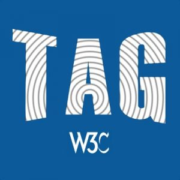

 The W3C Advisory Committee, having nominated four individuals, is invited today to vote until 14 December 2021 for three seats in the W3C Technical Architecture Group (TAG) election. The TAG is a special working group within the W3C, chartered under the W3C Process Document, with stewardship of the Web architecture. Some aspects of its mission include: